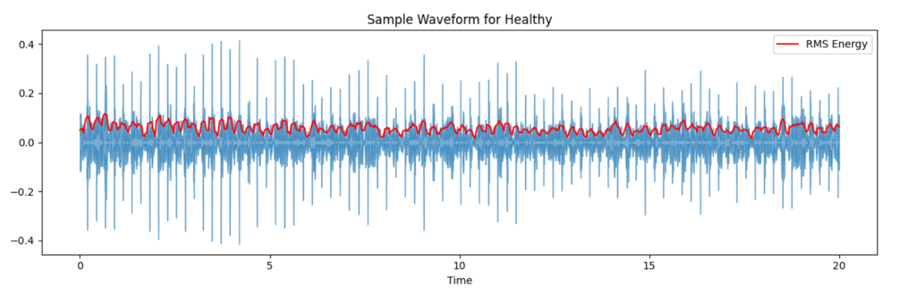
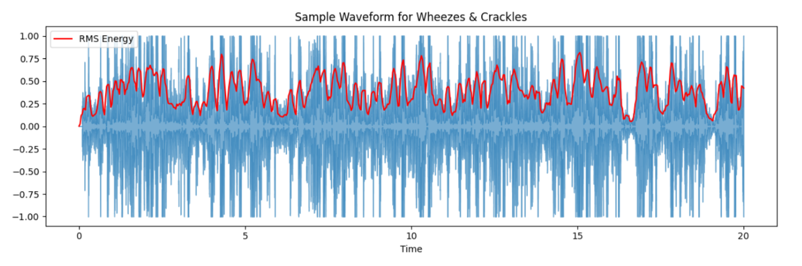

2 Methodology#
This chapter provides an overview of the entire methodology used in the study as shown in Figure 2.1, including the data processing workflow, feature extraction procedures, and analytical techniques applied to ensure reliable and accurate results.

Figure 2.1. Pipeline Overview#
2.1 Data Collection#
The dataset used in this study is the Respiratory Sound Database, originally acquired from the Biomedical Health Informatics Challenge hosted by Aristotle University of Thessaloniki (Rocha et al., 2019). This database was curated by research teams from Portugal and Greece and is publicly available at ICBHI 2017 Challenge website.
The dataset comprises 920 annotated audio recordings of respiratory sounds from 126 patients, with clips ranging from 10 to 90 seconds in length. Each recording includes corresponding annotation files that describe the presence of respiratory anomalies such as wheezes, crackles, or both, as well as demographic and diagnostic information for each patient. The dataset offers a comprehensive repository of real-world respiratory sound data, suitable for training and evaluating machine learning models targeting respiratory disease detection.
2.2 Exploratory Data Analysis#
To characterize and distinguish respiratory sounds, this study performed a multi-faceted Exploratory Data Analysis (EDA) by integrating signal processing with demographic analysis. Temporal and spectral properties of each recording, including segment duration, raw waveform morphology, and RMS energy envelopes, were examined to differentiate normal vesicular breathing from adventitious patterns such as wheezes, crackles, and combined events. In parallel, associations between patient age, gender, auscultatory labels, and clinical diagnoses (e.g., COPD, URTI, and asthma) were explored to situate acoustic patterns within relevant disease phenotypes.
2.2.1 Age and Gender across Respiratory Sound Patterns and Clinical Diagnoses#
To explore how patient demographics relate to both auscultatory findings and clinical diagnoses, age and gender were examined in relation to audio-based diagnostic categories (wheezes, crackles, and combined wheezes–crackles) and physician-assigned respiratory disease labels (e.g., chronic obstructive pulmonary disease, upper respiratory tract infection, asthma).
Age versus respiratory sound patterns. Age was treated as a continuous variable and related to lung sound labels using one-way analysis of variance (ANOVA). Because lung sound comprised four categories (normal, wheeze only, crackle only, both wheezes and crackles), ANOVA was the primary method for testing whether mean age differed significantly across these groups (Serdar et al., 2020). The correlation ratio η was computed alongside ANOVA to quantify how strongly the lung sound labels partitioned age variation, providing an effect-size measure that complements the F-test and facilitates interpretation of practical significance (Serdar et al., 2020).
The one-way ANOVA comparing age across the four lung sound labels yielded a highly significant result (F(3,n) = 17.229, p<0.001), indicating substantial differences in mean age between patients with different acoustic findings. The correlation ratio η=0.232 indicates a small to medium effect size (Cohen, 1988), meaning that while age differences are statistically significant, lung sound labels account for approximately 5.4% of the variance in age (η2=0.054). This modest effect, consistent with prior lung-sound cohort studies showing age-related differences in adventitious sound prevalence (Aviles-Solis et al., 2019), suggests that age is a relevant stratification variable but not the sole determinant of acoustic features. Notably, the stronger age–demographic diagnosis association indicates that clinical diagnoses incorporate age-related disease patterns more directly than do audio features alone, in line with data showing increasing COPD prevalence with age and contrasting age trends for asthma versus COPD (Safiri et al., 2022; De Marco et al., 2013).
Gender versus respiratory sound patterns. Gender was analysed as a categorical variable in relation to respiratory sound pattern using contingency tables. For each cross-tabulation of gender by respiratory sound pattern, the chi-square test of independence was used to evaluate whether the distribution of lung sound labels differed by gender. Cramér’s V was computed as the associated effect size, offering a scale-free index of association strength for nominal variables. Reporting both chi-square p-values and Cramér’s V aligns with recommendations to pair significance tests with effect-size metrics (McHugh, 2013).
The chi-square test comparing gender distribution across respiratory sound patterns was statistically significant (χ2=25.522, p<0.00), indicating that the distribution of adventitious sound types differed by sex. Cramér’s V = 0.167 indicates a weak to small effect size (De Oliveira Santana Amaral & Line, 2021; IBM Cognos Analytics, n.d.), suggesting that while gender and respiratory sound patterns are statistically associated, the strength of this association is modest. Using conventional effect-size benchmarks, a Cramér’s V of 0.167 falls between 0.05 (small) and 0.15 – 0.25 (medium boundaries), meaning gender explains only approximately 2.8% of the association. This aligns with clinical observations that both sexes experience a range of respiratory sound types, though slight gender gradients in wheeze and crackle prevalence have been noted in epidemiological studies (Aviles-Solis et al., 2019).
Age versus clinical diagnosis. The relationship between age and clinical diagnosis was examined using the same framework as for age versus respiratory sound patterns. The relationship between age and clinician-assigned respiratory diagnoses was examined using one-way ANOVA. The results show a dramatically stronger association than observed for age versus audio diagnosis. The ANOVA yielded F= 418.525, p<0.001, reflecting very large differences in mean age across the clinical diagnosis categories. The correlation ratio η=0.874 indicates a very large effect size, substantially exceeding Cohen’s threshold of 0.50 for large effects (Cohen, 1988), and indicating that diagnosis categories account for approximately 76.4% (η2=0.764) of the variance in age. This strong association is clinically meaningful: age distributions vary markedly between acute infections (e.g., URTI in younger patients) and chronic progressive diseases (e.g., COPD in older patients), a pattern well-established in respiratory epidemiology (Jin et al., 2021; World Health Organization, 2024).
Gender versus clinical diagnosis. This was analysed analogously to gender versus respiratory sound patterns. The chi-square test was statistically significant (χ2=31.036, p<0.001), indicating that the distribution of clinical respiratory diagnoses differed by sex. Cramér’s V=0.184 indicates a weak to small effect size at the lower boundary of the medium range (De Oliveira Santana Amaral & Line, 2021; IBM Cognos Analytics, n.d.), roughly 10% larger than the gender–respiratory sound patterns association. This suggests that gender and clinical diagnosis are more strongly related than gender and acoustic findings, with diagnosis groups accounting for approximately 3.4% (i.e., V2=0.034) of variance. Gender differences in respiratory disease prevalence, such as higher COPD rates in males and asthma often more severe in females, may contribute to this modest but detectable association, consistent with sex-specific respiratory morbidity patterns documented in population studies (Ntritsos et al., 2018; Zein & Erzurum, 2015).
Across all four pairs of variables, age emerged as a much stronger predictor of clinical diagnosis (η=0.874) than of respiratory sound patterns (η=0.232), demonstrating that clinical labels (COPD, URTI, asthma, etc.) incorporate age-related disease patterns more directly than do acoustic features alone. Conversely, gender showed weak associations with both audio-based and demographic diagnoses (Cramér’s V=0.167 and 0.184, respectively), suggesting that while sex may influence respiratory disease distribution, it is not a dominant driver of either acoustic or clinical diagnostic categories in this cohort. All four associations reached statistical significance (p<0.001), but effect sizes clarify that only the age–clinical diagnosis pairing represents a large, clinically substantial effect. These findings highlight the importance of age stratification in respiratory sound analysis and underscore that demographic variables should be considered alongside acoustic features when modeling respiratory disease (Fernandes et al., 2022).
2.2.2 Temporal Structure#
The temporal structure analysis was performed on lung sound recordings categorized into four diagnostic groups: healthy, wheezes, crackles, and combined wheezes & crackles. For each group, raw waveforms and their RMS energy envelopes were plotted to reveal variations in amplitude and event density over time. The RMS envelope is a robust feature for quantifying energy fluctuations characteristic of abnormal respiratory sounds, as supported by literature in machine learning-augmented lung sound recognition (Sabry et al., 2024; Sfayyih et al., 2023).
Recording duration. This showed that the mean segment length was relatively uniform across diagnostic groups, with healthy, wheeze, crackle, and combined wheeze–crackle recordings all clustered around 21–22 seconds. This approximate balance in duration suggests that temporal context is comparable between classes. The minimum and maximum durations varied more widely within each group, suggesting the presence of a small number of unusually long or short segments that may warrant truncation or padding in downstream modeling to standardize input length. This interpretation positions the duration analysis as a quality check: it confirms good overall balance while justifying standardization to handle outliers before training or evaluation.
Table 2.1. Recording Duration by Respiratory Pattern#
Respiratory Pattern |
Mean Duration (sec) |
Minimum Duration (sec) |
Maximum Duration (sec) |
|---|---|---|---|
Healthy |
21.22 |
7.85 |
82.50 |
Crackles |
21.90 |
14.57 |
86.20 |
Wheezes |
20.82 |
11.24 |
73.35 |
Wheezes & Crackles |
22.13 |
9.58 |
71.05 |
Healthy lung sound. The healthy waveform is characterized by low baseline amplitude and minimal transient activity, with the RMS envelope (red trace) closely following the mean signal value throughout the duration. The lack of pronounced peaks or high-energy events is consistent with the established morphology of normal vesicular breath sounds, as described in prior literature (Sabry et al., 2024; Sfayyih et al., 2023). The figure provides a visual reference for baseline lung sound energy and temporal regularity within healthy subjects.

Figure 2.2. Temporal Waveform and RMS Envelope for Healthy#
Wheezes. Displayed is the temporal pattern of a wheeze diagnosis, manifesting as periodic, banded oscillations in both the waveform and RMS envelope. The RMS trace highlights sustained periods of elevated energy, typical of musical, continuous wheezing described in diagnostic signal processing studies. The underlying waveform exhibits sinusoidal structure, further corroborating algorithmic and clinical findings on wheeze morphology (Sfayyih et al., 2023).

Figure 2.3. Temporal Waveform and RMS Envelope for Wheezes#
Crackles. This demonstrates the temporal waveform of lung sounds diagnosed with crackles. Short, explosive spikes dominate the recording, causing sudden increases in the RMS energy envelope against an otherwise low-amplitude baseline. Such discrete, high-energy temporal events are hallmark features of crackle sounds and mirror published patterns identified through both traditional auscultation and automated analysis (Sfayyih et al., 2023).
 Figure 2.4. Temporal Waveform and RMS Envelope for Crackles
Figure 2.4. Temporal Waveform and RMS Envelope for Crackles
Wheezes and Crackles. This illustrates the mixed presentation of adventitious lung sounds, marked by both frequent, high-amplitude spikes and sustained energy elevation in the waveform. The RMS energy envelope is irregular and often elevated, reflecting the co-occurrence of continuous (wheeze-like) and discrete (crackle-like) sound events. This jagged, non-periodic profile corresponds with clinical reports of pathological lung acoustics in cases showing both wheezes and crackles (Sabry et al., 2024).

Figure 2.5. Temporal Waveform and RMS Envelope for Wheezes & Crackles#
2.2.3 Spectral Analysis#
Spectral analysis was conducted to further characterize the lung sound recordings using four established spectral features: spectral centroid, spectral bandwidth, spectral roll-off, and spectral flux. The box plots visualize their distributions across diagnostic groups: Healthy, Wheezes, Crackles, and Wheezes & Crackles.
Spectral centroid. This reflects the “center of mass” of the frequency spectrum, often perceived as the brightness of a sound. Box plots show Healthy recordings exhibit higher median spectral centroid values (352.48 Hz) compared to pathological classes, indicating a higher presence of high-frequency components in non-diseased states. Lower centroid values in disease categories, especially Wheezes & Crackles (254.42 Hz), suggest a shift towards lower-frequency dominant sounds, likely due to airway obstruction and altered airflow mechanics (Abeyratne et al., 2013).
Spectral bandwidth and roll-off. Spectral bandwidth measures the width of the frequency band containing significant energy, while spectral roll-off represents the frequency below which a certain percentage (commonly 85-95%) of the total spectral energy is contained. Bandwidths are highest in Healthy (852.79 Hz) and Crackles (945.54 Hz) cases, with median values decreasing in Wheezes & Crackles (717.77 Hz). This trend mirrors the spectral roll-off feature, where distributions are wider for Healthy (554.10 Hz) and Crackles (498.37 Hz), reflecting more distributed spectral energy, while lower roll-off in combined pathologies indicates concentration of energy at lower frequencies (Ponte et al., 2012).
Spectral flux. Spectral flux quantifies frame-to-frame spectral changes or temporal instability within a signal. Healthy (9801.56 Hz) recordings tend to show moderate spectral flux, indicating regular patterns in respiratory cycles. Both Crackles (12804.36 Hz) and combined Wheezes & Crackles (11803.40 Hz) display slightly higher variability and presence of outliers, consistent with abrupt or intermittent acoustic events superimposed on the baseline. Wheezes (11420.61 Hz) show greater intra-group spectral spread, consistent with their characterization as high‑pitched, continuous adventitious sounds whose fundamental frequency typically ranges from about 100–1000 Hz with harmonics sometimes exceeding 1000–1600 Hz, leading to substantial variability in pitch across events (Rocha et al., 2021).

Figure 2.5. Box Plots of Spectral Features Across Diagnoses#
2.3 Data Preprocessing#
This section describes the procedures employed to prepare the respiratory sound recordings for deep learning modeling. Separate experimental setups were implemented to evaluate how different preprocessing and balancing techniques affect model performance. These steps ensure consistency, enhance generalizability, and preserve clinically relevant features for reliable classification of respiratory anomalies.
The dataset exhibits a substantial class imbalance, most notably in the combined adventitious sounds category. This imbalance can introduce bias during model training, as classifiers may become disproportionately influenced by majority classes. To mitigate this risk, class balancing techniques were applied to ensure that all categories contribute more equitably to the learning process. This approach promotes fairer model behavior and aligns with established recommendations for managing imbalance in respiratory sound datasets (Chu et al., 2020).
2.3.1 Sampling rate#
Resampling to 16 kHz preserves clinically relevant lung sound frequencies (wheezes up to ~2–2.5 kHz, crackles energy concentrated below ~2 kHz) while keeping data size practical for deep learning workflows.
Recent reviews and method papers recommend sampling rates that cover the diagnostic frequency band and commonly use 16 kHz for spectrogram-based deep learning pipelines. Huang et al. (2023) review contemporary DL approaches and note common resampling practices for lung sounds. Rocha et al. (2020) describe the ICBHI dataset and frequency content of lung adventitious sounds, supporting the Nyquist-based choice.
2.3.2 Window/Segment length#
6s. A 6-second window reliably captures at least one full adult respiratory cycle (typical cycle ≈ 3–5s), providing sufficient temporal context for continuous adventitious events (e.g., wheezes) while minimizing redundant data. This choice is supported by prior work: Balli and Kutlu (2021) found that classification accuracy for respiratory abnormalities peaks in window sizes between 2 and 10 s. Capturing a full cycle ensures that models can learn the temporal patterns of diagnostic events effectively (Nguyen et al., 2020).
20s. Based on exploratory data analysis, the lung-sound recordings in the dataset ranged from approximately 10 to 90s in length and the majority of it are more than 20s. To standardize inputs and provide uniform, longer contexts, we loop-padded all clips to 20s. This approach enables models that prefer longer fixed-length inputs and allows testing whether expanded temporal context combined with class balancing improves detection of minority classes. Loop-padded windows are commonly used to satisfy fixed-length input requirements in CNN-based lung-sound classification (Bae et al., 2023).
Several modern lung-sound classification studies segment ICBHI recordings into multi-second windows (commonly 5–8 s) for CNN-based models because a few seconds are sufficient to capture diagnostic events, and longer windows offer diminishing returns when they simply repeat similar breathing cycles (Nguyen & Pernkopf, 2022; Kim et al., 2021). Reviews and comparative studies on ICBHI processing emphasize segment-based analysis with segment lengths of ~5–10 s (Nguyen et al., 2020; Nguyen et al., 2022). Use of longer windows via loop padding is also seen in works that require fixed-length inputs; such studies highlight the trade-off between temporal context and redundancy (Bae et al., 2023).
2.3.3 Augmentation#
Probabilistic augmentation using time shift, low-level noise injection and gain variation and pitch shifting increases robustness to recording-phase variability, ambient noise, and breathing-rate variability, while preserving medically meaningful frequency cues.
Time shift. Shifts the waveform along the time axis without altering frequency content. Prevents over-reliance on signal onset timing; mimics variations in stethoscope placement rhythm.
Gaussian noise. Adds low-amplitude random noise. Simulates real-world ambient noise and improves robustness to hospital background sounds.
Gain variation. Random amplification/ volume reduction. Mimics different microphone sensitivities and patient–stethoscope coupling pressures.
Pitch shift. Changes the pitch (how high or low the sound is) of an audio signal without changing its duration (speed).
Recent empirical works on ICBHI and related corpora show augmentation such as time shifting and additive noise improves generalization; Nguyen & Pernkopf (2022) and later studies (co-tuning work, transfer-learning approaches) explicitly use log-Mel spectrograms and augmentations to mitigate small-sample issues and variability across recording conditions. The Huang (2023) review summarizes popular augmentation strategies for lung sounds and cautions against pitch alteration that would change diagnostically relevant spectral cues.
2.3.4 Padding#
Tiling/loop padding. Loop padding extends shorter respiratory recordings by repeatedly appending the original waveform until the required duration is reached. This method preserves the physiological acoustic structure of the signal, ensuring that no silent artifacts distort its temporal or spectral features.
Slicing. Slicing in audio preprocessing means dividing a long audio signal into smaller, fixed-length segments. This is done to standardize input sizes for machine learning models and to capture localized acoustic events that may not span the entire recording, while also increasing the number of training samples to enhance model robustness and feature learning.
Methodological discussions in respiratory sound literature and applied audio preprocessing guidelines recommend repeating or tiling short signals (or using overlapping windows) rather than inserting long silences when the model’s receptive field expects continuous data. Reviews and practical implementations of ICBHI-based pipelines, and several open-source preprocessing toolboxes, consistently use tiling or overlapping windows to avoid adding long silence segments that degrade feature quality (Huang, 2023).
2.3.5 Class balancing#
When data are highly imbalanced across diagnostic categories, undersampling to the minority class is a direct way to reduce bias and measure classifier sensitivity to underrepresented classes. Combining balancing with augmentation increases intra-class variability without inflating majority-class dominance.
In this study, the original dataset shows substantial imbalance, which can cause the model to favor majority classes while overlooking minority-class patterns. To address this, we employed several sampling strategies across experiments.
Original Sampling. Uses the dataset in its natural form, keeping the original class distribution intact. This provides a baseline for evaluating model performance under real-world imbalances.
Undersampling. Reduces the number of samples in majority classes to match the size of the minority class. This prevents the model from being biased toward dominant classes but reduces the total amount of training data.
Oversampling. Increases the number of samples in minority classes by augmentation. This improves class balance without discarding majority-class data, though it may increase the risk of overfitting.
Hybrid “Anchor” Balancing. We will implement a “mean balancing” strategy where we set a target count based on the average class size. The majority class is undersampled to this target, while minority classes are oversampled using diverse augmentations to reach it. This strikes a balance, avoiding the data loss of undersampling and the excessive redundancy of full oversampling.
Several ICBHI-focused studies adopt class rebalancing strategies (undersampling, oversampling, or class-weighted loss) to address severe imbalance, and comparative work shows such interventions are necessary to improve detection of rarer classes (Nguyen et al., 2022; performance evaluations and recent reviews). Use of undersampling to the minority class is an accepted experimental approach in comparative studies that prioritize balanced evaluation.
2.3.6 Feature Extraction#
Feature extraction followed augmentation using a dual-path strategy combining raw waveform encoding and log-Mel spectrograms. This design retains both time-domain morphology and perceptually relevant time–frequency structure of lung sounds.
log-Mel spectrogram. Converts each waveform into a 2-D time–frequency map using n_mels ≈ 128 and fmax ≈ 8 kHz, followed by logarithmic scaling. Log-Mel spectrograms are widely regarded as the most effective representation for deep learning–based respiratory sound analysis because they emphasize the lower-frequency regions where wheezes and crackles predominantly occur. Their superiority has been repeatedly validated across recent ICBHI-focused works, including those by Huang et al. (2023), T. Nguyen et al. (2020), Rocha et al. (2021), Tasar et al. (2020), and Kim et al. (2019), all of which report improved classification accuracy using Mel-spectrogram-based CNN pipelines.
MFCCs (Mel-Frequency Cepstral Coefficients). Are audio features that encode the spectral envelope of a sound on a perceptual scale, and they are used in lung sound classification to capture the characteristic frequency patterns of breath sounds. Studies have shown that MFCCs effectively “imitate the human ear” when analyzing recorded lung sounds (Arar & Sedef, 2023) and are commonly used as inputs to machine-learning models for respiratory sound analysis (Topaloğlu et al., 2025; Sahu et al., 2025). These coefficients provide a compact, noise-robust representation that enhances classification of normal and abnormal lung sounds (Kim et al., 2025).
References#
Abeyratne, U. R., Swarnkar, V., Setyati, A., & Triasih, R. (2013). Cough sound analysis can rapidly diagnose childhood pneumonia. Annals of Biomedical Engineering, 41(11), 2448–2462. https://doi.org/10.1007/s10439-013-0836-0
Arar, M. E., & SEDEF, H., (2023). An efficient lung sound classification technique based on MFCC and HDMR. Signal, Image and Video Processing, vol.17, no.8, 4385-4394.
Aviles-Solis, J. C., Jácome, C., Davidsen, A., Einarsen, R., Vanbelle, S., Pasterkamp, H., & Melbye, H. (2019). Prevalence and clinical associations of wheezes and crackles in the general population: the Tromsø study. BMC Pulmonary Medicine, 19(1), 173. https://doi.org/10.1186/s12890-019-0928-1
Bae, S., Lee, J., & Park, H. (2023). Deep learning approaches for respiratory sound analysis using ICBHI dataset. Interspeech 2023. Retrieved from https://www.isca-archive.org/interspeech_2023/bae23b_interspeech.pdf
Balli, O., & Kutlu, Y. (2021). Optimizing window lengths for lung sound classification: A comparative study. arXiv. https://arxiv.org/abs/2101.08495
Chu, W., Pham, T., & Abeyratne, U. R. (2020). Deep learning for respiratory sound classification in imbalanced datasets: Effectiveness of data balancing and augmentation strategies. IEEE Access, 8, 162576–162588. https://doi.org/10.1109/ACCESS.2020.3021534
De Oliveira Santana Amaral, E., & Line, S. R. P. (2021). Current use of effect size or confidence interval analyses in clinical and biomedical research. Scientometrics, 126(11), 9133–9145. https://doi.org/10.1007/s11192-021-04150-3
Fernandes, T., Rocha, B. M., Pessoa, D., De Carvalho, P., & Paiva, R. P. (2022). Classification of adventitious Respiratory sound Events: A Stratified analysis. 2022 IEEE-EMBS International Conference on Biomedical and Health Informatics (BHI). https://doi.org/10.1109/bhi56158.2022.9926841
Huang, D., Huang, J., Qiao, K., Zhong, N., Lu, H., & Wang, W. (2023). Deep learning-based lung sound analysis for intelligent stethoscope. Military Medical Research, 10(1), 44. https://doi.org/10.1186/s40779-023-00479-3
IBM Cognos Analytics. (n.d.). https://www.ibm.com/docs/en/cognos-analytics/12.0.x?topic=terms-cramrs-v
International Conference on Biomedical and Health Informatics. (2017). ICBHI respiratory sound database challenge. https://bhichallenge.med.auth.gr
Jin, X., Ren, J., Li, R., Gao, Y., Zhang, H., Li, J., Zhang, J., Wang, X., & Wang, G. (2021). Global burden of upper respiratory infections in 204 countries and territories, from 1990 to 2019. EClinicalMedicine, 37, 100986. https://doi.org/10.1016/j.eclinm.2021.100986
Kim, Y., Hyon, Y., Jung, S. S., Lee, S., Yoo, G., Chung, C., & Ha, T. (2021). Respiratory sound classification for crackles, wheezes, and rhonchi in the clinical field using deep learning. Scientific Reports, 11(1), 17186. https://doi.org/10.1038/s41598-021-96724-7
Kim, Y., Kim, K. B., Leem, A. Y., Kim, K., & Lee, S. H. (2025). Enhanced Respiratory Sound Classification Using Deep Learning and Multi-Channel Auscultation. Journal of Clinical Medicine, 14(15), 5437. https://doi.org/10.3390/jcm14155437
McHugh, M. L. (2013). The Chi-square test of independence. Biochemia Medica, 23(2), 143–149. https://doi.org/10.11613/bm.2013.018
Nguyen, T., & Pernkopf, F. (2022). Lung sound classification using co-tuning and stochastic normalization. arXiv.org. https://arxiv.org/abs/2108.01991v1
Ntritsos, G., Franek, J., Belbasis, L., Christou, M. A., Markozannes, G., Altman, P., Fogel, R., Sayre, T., Ntzani, E. E., & Evangelou, E. (2018). Gender-specific estimates of COPD prevalence: a systematic review and meta-analysis. International Journal of COPD, 13, 1507–1514. https://doi.org/10.2147/copd.s146390
Ponte, D. F., Moraes, R., Hizume, D. C., & Alencar, A. M. (2012). Characterization of crackles from patients with fibrosis, heart failure and pneumonia. Medical Engineering & Physics, 35(4), 448–456. https://doi.org/10.1016/j.medengphy.2012.06.009
Rocha, B. M., Filos, D., Mendes, L., Serbes, G., Ulukaya, S., Kahya, Y. P., Jakovljevic, N., Turukalo, T. L., Vogiatzis, I. M., Perantoni, E., Kaimakamis, E., Natsiavas, P., Oliveira, A., Jácome, C., Marques, A., Maglaveras, N., Paiva, R. P., Chouvarda, I., & De Carvalho, P. (2019). An open access database for the evaluation of respiratory sound classification algorithms. Physiological Measurement, 40(3), 035001. https://doi.org/10.1088/1361-6579/ab03ea
Rocha, B. M., Pessoa, D., Marques, A., Carvalho, P., & Paiva, R. P. (2020). Automatic classification of adventitious - respiratory sounds: A (Un)Solved problem? Sensors, 21(1), 57. https://doi.org/10.3390/s21010057
Sabry, A. H., Bashi, O. I. D., Ali, N. N., & Kubaisi, Y. M. A. (2024). Lung disease recognition methods using audio-based analysis with machine learning. Heliyon, 10(4), e26218. https://doi.org/10.1016/j.heliyon.2024.e26218
Safiri, S., Carson-Chahhoud, K., Noori, M., Nejadghaderi, S. A., Sullman, M. J. M., Heris, J. A., Ansarin, K., Mansournia, M. A., Collins, G. S., Kolahi, A., & Kaufman, J. S. (2022). Burden of chronic obstructive pulmonary disease and its attributable risk factors in 204 countries and territories, 1990-2019: results from the Global Burden of Disease Study 2019. BMJ, 378, e069679. https://doi.org/10.1136/bmj-2021-069679
Sahu, P., Kumar, S., & Behera, A. K. (2025). DeepFusion: early diagnosis of COPD, asthma, and pneumonia using lung sound analysis with a multimodal BiGRU network. Computer Methods in Biomechanics and Biomedical Engineering, 1–14. Advance online publication. https://doi.org/10.1080/10255842.2025.2511228
Serdar, C. C., Cihan, M., Yücel, D., & Serdar, M. A. (2020). Sample size, power and effect size revisited: simplified and practical approaches in pre-clinical, clinical and laboratory studies. Biochemia Medica, 31(1), 27–53. https://doi.org/10.11613/bm.2021.010502
Sfayyih, A. H., Sabry, A. H., Jameel, S. M., Sulaiman, N., Raafat, S. M., Humaidi, A. J., & Kubaiaisi, Y. M. A. (2023). Acoustic-Based Deep Learning Architectures for Lung Disease Diagnosis: A Comprehensive Overview. Diagnostics, 13(10), 1748. https://doi.org/10.3390/diagnostics13101748
Sfayyih, A. H., Sulaiman, N., & Sabry, A. H. (2023). A review on lung disease recognition by acoustic signal analysis with deep learning networks. Journal of Big Data, 10(1), 101. https://doi.org/10.1186/s40537-023-00762-z
T. Nguyen and F. Pernkopf. (2020). Lung Sound Classification Using Snapshot Ensemble of Convolutional Neural Networks. Engineering in Medicine & Biology Society (EMBC), 10.1109/EMBC44109.2020.9176076.
Topaloglu, I., Ozduygu, G., Atasoy, C., Batıhan, G., Serce, D., Inanc, G., Güçsav, M. O., Yıldız, A. M., Tuncer, T., Dogan, S., & Barua, P. D. (2025). Machine Learning-Driven Lung Sound Analysis: Novel Methodology for Asthma Diagnosis. Advances in Respiratory Medicine, 93(5), 32. https://doi.org/10.3390/arm93050032
Wang, Z., & Sun, Z. (2024). Performance evaluation of lung sounds classification using deep learning under variable parameters. EURASIP Journal on Advances in Signal Processing, 2024(1). https://doi.org/10.1186/s13634-024-01148-w
World Health Organization. (2024, November 6). Chronic obstructive pulmonary disease (COPD). https://www.who.int/news-room/fact-sheets/detail/chronic-obstructive-pulmonary-disease-(copd)
Zein, J. G., & Erzurum, S. C. (2015). Asthma is Different in Women. Current Allergy and Asthma Reports, 15(6), 28. https://doi.org/10.1007/s11882-015-0528-y